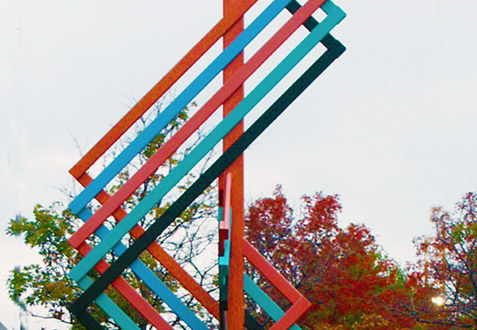

×

The tower under scaffolding during construction, 1898.
The tower under scaffolding during construction, 1898.
Welcome to the Compton Hill Water Tower, the newest of the St. Louis' three towers.
Before you enter, walk around the tower.
The 179-foot tower is made of rusticated limestone, buff-colored brick and terra cotta. Its walls are adorned with carvings of mythical animals and leaf patterns.
Inside, spiral steps take visitors to the top of the tower where an observation deck under a bell-shaped roof of terra cotta tiles offers a 360-degree view of the City of St. Louis.
During the World’s Fair in 1904, as many as 5,000 people visited the tower and promenaded in carriages through Reservoir Park.
Next Up
Footnote
